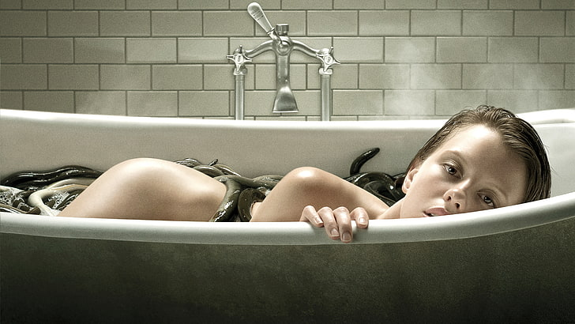

A Cure For A Wellness
Le titre du film a été traduit en france par "A Cure for Life", va savoir pourquoi.
- Réalisé par : Gore Verbinski
- Acteurs principaux : Dane DeHaan, Mia Goth, Jason Isaacs, Harry Groener
- 2h26 (146 minutes)
- Résumé : Lockhart, jeune cadre ambitieux, est lancé sur la trace de son patron disparu dans un mystérieux centre de bien-être en Suisse. Pris au piège de l'Institut et de son énigmatique corps médical, il découvre peu à peu la sinistre nature des soins proposés aux patients. Alors qu'on lui diagnostique le même mal qui habite l'ensemble des pensionnaires, Lockhart n'a plus d'autres choix que de se soumettre à l'étrange traitement délivré par le centre : la Cure. Ce film est sombre avec quelque moments qui font grincer des dents (retenez bien le mot dent mdr).
- Les points positifs : L'ambiance du film, Dane DeHaan & Mia Goth, le scenario du film et sa photographie, l'accent de Jason Isaacs.
- Les points négatifs : Le lien de Lockhart avec sa mère.
- Note : 4/5, un film sombre dans une station de rétablissement suisse ça vaut le détour.
